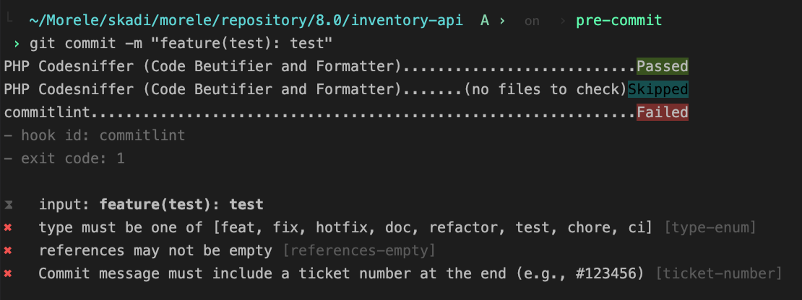

czyli jak sprawnie zarządzać git hookami
repos:
- repo: https://github.com/TymekB/pre-commit-php
rev: 1.0.3
hooks:
- id: php-cs
files: \.(php)$
args: [ --standard=PSR1 -p ]
- repo: https://github.com/TymekB/pre-commit-php
rev: 1.0.3
hooks:
- id: php-unit
stages: [ pre-push ]
- repo: https://github.com/TymekB/pre-commit-php
rev: 1.0.3
hooks:
- id: php-stan
stages: [ pre-push ]
files: \.(php)$
- repo: https://github.com/alessandrojcm/commitlint-pre-commit-hook
rev: v9.13.0
hooks:
- id: commitlint
stages: [ commit-msg ]
brew install pre-commit
cd inventory-api
pre-commit install
pre-commit install --hook-type pre-push --hook-type commit-msg

pre-commit uninstall
git commit --no-verify -m "commit message"
PRE_COMMIT_DISABLE=true git commit -m "commit message"